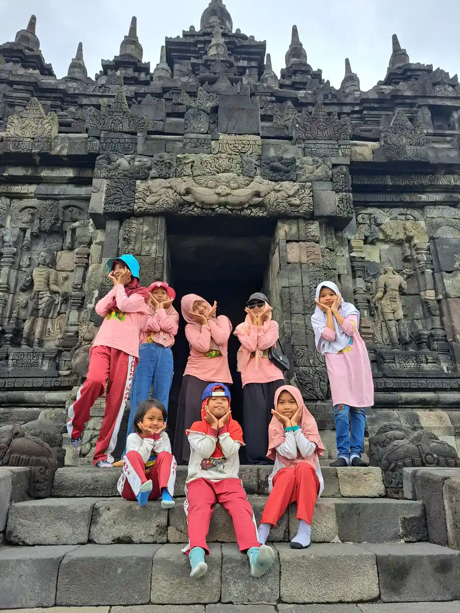
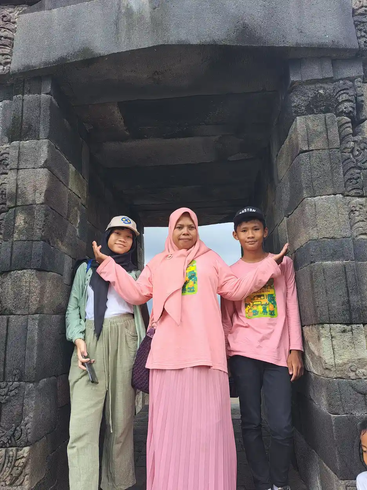
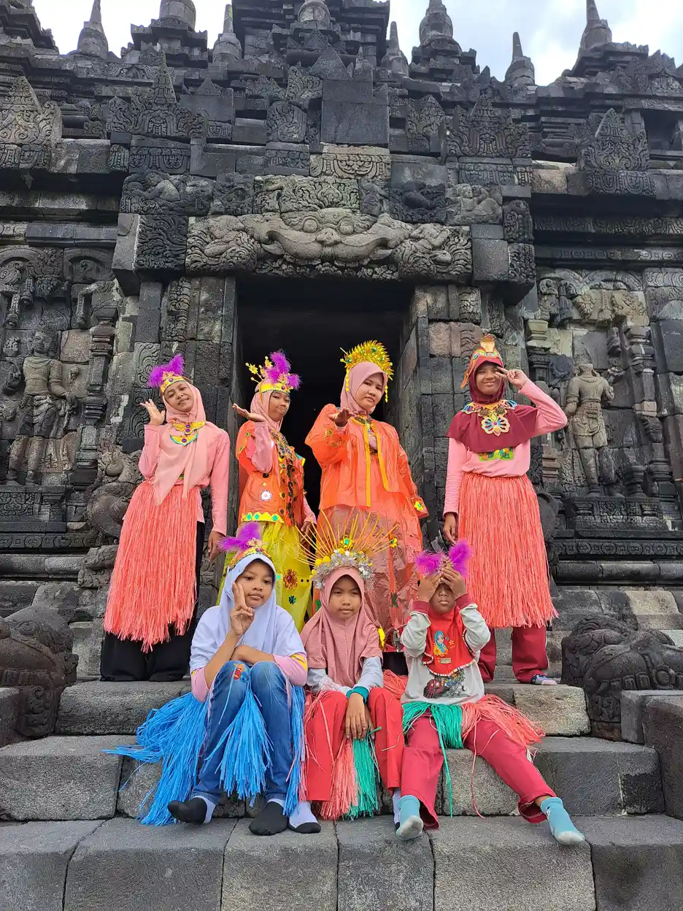
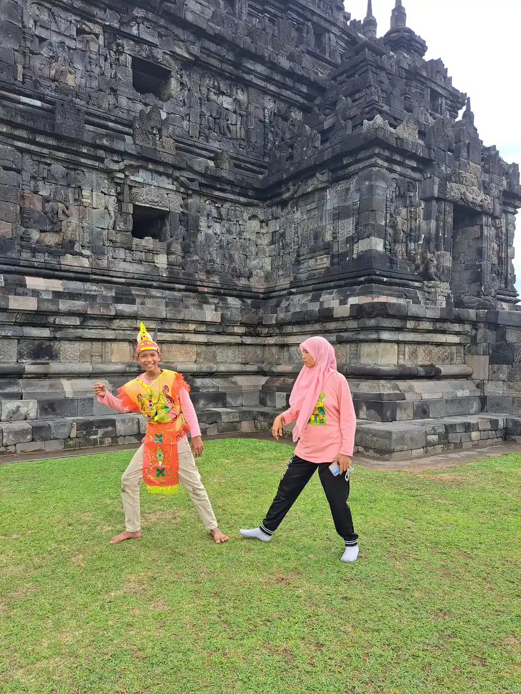

Jawaban singkat: anak disabilitas intelektual punya hak yang sama untuk bersekolah. UUD 1945 Pasal 31 menjamin hak setiap warga negara atas pendidikan, UU Nomor 8 Tahun 2016 Pasal 10 menjamin pendidikan bermutu secara inklusif maupun khusus beserta akomodasi yang layak, dan PP Nomor 13 Tahun 2020 Pasal 12 merinci bentuk akomodasinya, misalnya fleksibilitas materi, evaluasi, masa studi, dan ijazah yang menjelaskan capaian anak. Orang tua dapat memilih sekolah inklusi atau sekolah khusus, meminta asesmen fungsional, dan mengadu secara tertulis bila hak ini diabaikan.
Daftar Isi
- Siapa yang disebut penyandang disabilitas intelektual?
- Dasar hukum hak pendidikan
- Kewajiban pemerintah dan sekolah
- Pilihan layanan pendidikan
- Bentuk akomodasi yang layak
- Asesmen fungsional dan modifikasi kurikulum
- Peran Unit Layanan Disabilitas
- Dokumen yang perlu disiapkan
- Langkah bila hak anak ditolak
- Menjaga hak tetap berpusat pada anak
- Pertanyaan yang sering diajukan
Siapa yang Disebut Penyandang Disabilitas Intelektual dalam Hukum?
Pasal 4 ayat (1) UU Nomor 8 Tahun 2016 tentang Penyandang Disabilitas membagi ragam disabilitas menjadi empat: fisik, intelektual, mental, dan sensorik. Penjelasan pasal tersebut mengartikan penyandang disabilitas intelektual sebagai terganggunya fungsi pikir karena tingkat kecerdasan di bawah rata-rata, antara lain lambat belajar, disabilitas grahita, dan down syndrom. Jadi, istilah yang di sekolah sering disebut tunagrahita berada dalam ragam ini.
Ayat (2) pasal yang sama menyebut ragam disabilitas dapat dialami secara tunggal, ganda, atau multi dalam jangka waktu lama, dan ditetapkan oleh tenaga medis. PP Nomor 13 Tahun 2020 tentang Akomodasi yang Layak untuk Peserta Didik Penyandang Disabilitas memperjelas bahwa tenaga medis itu adalah dokter dan/atau dokter spesialis. Dokter tersebut dapat disediakan oleh sekolah penyelenggara pendidikan inklusif, Unit Layanan Disabilitas, atau orang tua.
Selain keterangan dokter, Pasal 9 ayat (7) PP 13/2020 menyebut ragam disabilitas juga dapat dibuktikan dengan kartu penyandang disabilitas dari kementerian di bidang sosial. Bagi orang tua, artinya ada lebih dari satu jalan untuk menunjukkan kebutuhan anak. Untuk memahami kondisinya dari sisi perkembangan, baca juga panduan disabilitas intelektual dan perbedaan tunagrahita ringan, sedang, dan berat. Label hukum bukan untuk membatasi anak, melainkan pintu agar dukungan yang menjadi haknya dapat diminta secara resmi.

Dasar Hukum Hak Pendidikan Anak Disabilitas Intelektual
Hak pendidikan anak disabilitas intelektual tidak bersandar pada satu aturan saja. Ia berlapis, mulai dari konstitusi sampai peraturan menteri. Pasal 31 ayat (1) UUD 1945 menyatakan setiap warga negara berhak mendapat pendidikan, dan ayat (2) menyatakan setiap warga negara wajib mengikuti pendidikan dasar dan pemerintah wajib membiayainya. Kata "setiap" tidak mengecualikan anak dengan kecerdasan di bawah rata-rata.
UU Nomor 20 Tahun 2003 tentang Sistem Pendidikan Nasional Pasal 5 ayat (1) menegaskan hak yang sama atas pendidikan bermutu. Ayat (2) menyebut warga negara yang memiliki kelainan fisik, emosional, mental, intelektual, dan/atau sosial berhak memperoleh pendidikan khusus. Pasal 32 ayat (1) mengartikan pendidikan khusus sebagai pendidikan bagi peserta didik yang memiliki tingkat kesulitan dalam mengikuti proses pembelajaran.
Lapisan berikutnya datang dari UU Nomor 19 Tahun 2011, yang mengesahkan Konvensi Hak-Hak Penyandang Disabilitas (CRPD). Pasal 24 konvensi itu meminta negara memastikan anak penyandang disabilitas tidak dikecualikan dari sistem pendidikan umum atas dasar disabilitas, dan bahwa akomodasi yang layak sesuai kebutuhan individu disediakan. Ringkasan hak ABK secara umum ada di artikel hak anak berkebutuhan khusus; tabel berikut fokus pada sisi pendidikan.
| Aturan | Isi yang relevan | Artinya bagi orang tua |
|---|---|---|
| UUD 1945 Pasal 31 ayat (1) dan (2) | Hak setiap warga negara atas pendidikan, wajib pendidikan dasar yang dibiayai pemerintah | Hak anak bersekolah dijamin konstitusi |
| UU 20/2003 Pasal 5 dan Pasal 32 | Hak atas pendidikan bermutu, hak pendidikan khusus bagi yang memiliki kelainan intelektual | Layanan khusus adalah hak, bukan belas kasihan |
| UU 19/2011 (CRPD Pasal 24) | Tidak dikecualikan dari sistem pendidikan umum, akomodasi yang layak | Penolakan atas dasar disabilitas bertentangan dengan komitmen negara |
| UU 8/2016 Pasal 10, 40 sampai 43 | Pendidikan inklusif dan khusus, wajib belajar 12 tahun, ULD, sanksi administratif | Dasar untuk meminta akomodasi dan pendampingan |
| PP 13/2020 Pasal 12 | Daftar bentuk akomodasi khusus untuk disabilitas intelektual | Rujukan konkret saat berdiskusi dengan sekolah |
| Permendikbudristek 48/2023 | Asesmen fungsional, modifikasi kurikulum, tata cara pengaduan | Panduan teknis di tingkat sekolah dan dinas |
Kewajiban Pemerintah dan Sekolah Menurut UU 8/2016
Pasal 40 UU Nomor 8 Tahun 2016 memuat kewajiban yang sering belum diketahui orang tua. Pemerintah dan pemerintah daerah wajib menyelenggarakan dan/atau memfasilitasi pendidikan untuk penyandang disabilitas di setiap jalur, jenis, dan jenjang. Penyelenggaraannya dilakukan dalam sistem pendidikan nasional melalui pendidikan inklusif dan pendidikan khusus.
- Wajib belajar 12 tahun: anak penyandang disabilitas wajib diikutsertakan (ayat 3).
- Dekat rumah: pemerintah daerah wajib mengutamakan anak bersekolah di lokasi yang dekat tempat tinggalnya (ayat 4).
- Program kesetaraan: penyandang disabilitas yang tidak berpendidikan formal difasilitasi untuk mendapatkan ijazah pendidikan dasar dan menengah (ayat 5).
- Beasiswa dan biaya: beasiswa bagi peserta didik berprestasi yang orang tuanya tidak mampu, serta biaya pendidikan bagi anak dari penyandang disabilitas yang tidak mampu (ayat 6 dan 7).
Pasal 41 menambahkan kewajiban memfasilitasi keterampilan dasar untuk kemandirian dan partisipasi penuh. Salah satunya keterampilan komunikasi dalam bentuk, sarana, dan format yang bersifat augmentatif dan alternatif. Ini relevan bagi anak disabilitas intelektual yang belum lancar berbicara, karena papan gambar atau simbol dapat menjadi bagian sah dari layanan pendidikannya.
Pasal 43 ayat (3) mengatur bahwa penyelenggara pendidikan yang tidak menyediakan akomodasi yang layak dikenai sanksi administratif berupa teguran tertulis, penghentian kegiatan pendidikan, pembekuan izin, dan pencabutan izin. Bila ingin memetakan bantuan lain dari negara, lihat juga cara mengajukan bantuan pemerintah untuk anak disabilitas.
Pilihan Layanan: Sekolah Inklusi, SLB, dan Jalur Kesetaraan
Hukum tidak mengharuskan anak disabilitas intelektual belajar di satu jenis sekolah. Pasal 10 huruf a UU 8/2016 memakai frasa "secara inklusif dan khusus", sehingga keluarga dapat menimbang sekolah inklusi maupun pendidikan khusus. Di masyarakat, sekolah luar biasa yang melayani anak dengan hambatan intelektual biasa dikenal sebagai SLB C. Penjelasan lebih lengkap ada di artikel SLB untuk anak apa saja.
Permendikbudristek Nomor 48 Tahun 2023 juga menggantikan aturan lama tentang pendidikan inklusi. Database peraturan BPK mencatat peraturan ini mencabut Permendiknas Nomor 70 Tahun 2009 tentang Pendidikan Inklusi bagi Peserta Didik yang Memiliki Kelainan dan Memiliki Potensi Kecerdasan dan/atau Bakat Istimewa. Jadi, rujukan teknis yang dipakai sekolah sekarang semestinya Permendikbudristek 48/2023. Untuk perbandingan rinci kedua model, baca perbedaan sekolah inklusi dan SLB.
| Pilihan | Dasar aturan | Cocok dipertimbangkan bila | Hal yang perlu ditanyakan |
|---|---|---|---|
| Sekolah reguler yang inklusif | UU 8/2016 Pasal 10 huruf a dan Pasal 40 ayat (2) | Anak siap belajar bersama teman sebaya dengan dukungan | Ketersediaan guru pendidikan khusus, rasio guru, bentuk penilaian |
| Sekolah khusus (SLB) | UU 20/2003 Pasal 32 ayat (1) | Anak membutuhkan program yang sangat individual dan kelas kecil | Program keterampilan hidup, transisi, jarak dari rumah |
| Program kesetaraan | UU 8/2016 Pasal 40 ayat (5) | Anak belum atau tidak lagi menempuh pendidikan formal | Penyelenggara, jadwal, bentuk ijazah |
Apa pun pilihannya, keputusan sebaiknya berangkat dari kebutuhan anak, bukan hanya dari ketersediaan kursi. Kunjungi sekolah, amati kelas, dan tanyakan bagaimana mereka menyusun program individual. Pilihan juga boleh berubah seiring perkembangan anak.

Bentuk Akomodasi yang Layak untuk Disabilitas Intelektual
PP Nomor 13 Tahun 2020 Pasal 1 mengartikan akomodasi yang layak sebagai modifikasi dan penyesuaian yang tepat dan diperlukan untuk menjamin penikmatan atau pelaksanaan hak asasi dan kebebasan fundamental bagi penyandang disabilitas berdasarkan kesetaraan. Bagian yang paling berguna bagi orang tua adalah Pasal 12, karena pasal itu khusus mengatur peserta didik penyandang disabilitas intelektual.
Bentuk akomodasi menurut Pasal 12 meliputi:
- afirmasi seleksi masuk sesuai kondisi intelektual anak berdasarkan keterangan dokter dan/atau dokter spesialis;
- fleksibilitas proses pembelajaran dan bentuk materi sesuai kebutuhan;
- fleksibilitas dalam merumuskan kompetensi lulusan atau capaian pembelajaran;
- fleksibilitas evaluasi, penilaian kompetensi, dan waktu penyelesaian tugas;
- penyesuaian rasio guru dengan jumlah peserta didik disabilitas intelektual di kelas;
- capaian pembelajaran yang disesuaikan dengan kemampuan masing-masing anak;
- pengajaran keterampilan hidup sehari-hari, baik domestik, interaksi di masyarakat, maupun di tempat berkarya;
- fleksibilitas masa studi dan ruang untuk melepas ketegangan atau ruang relaksasi;
- ijazah atau sertifikat kompetensi yang menginformasikan capaian dalam bentuk deskriptif dan angka.
Lampiran Permendikbudristek 48/2023 memakai daftar serupa dengan dua catatan penting. Afirmasi seleksi masuk disebut berdasarkan keterangan psikolog, dan sebagian besar fleksibilitas diberikan sesuai rekomendasi hasil asesmen kebutuhan. Lampiran itu juga menyebut sekolah dapat mengeluarkan surat keterangan tentang ragam disabilitas dan capaian kemampuan anak. Contoh penerapan di kelas, misalnya adaptasi soal ujian, dapat menjadi bahan diskusi dengan guru.
Asesmen Fungsional dan Modifikasi Kurikulum
Akomodasi tidak dipilih secara acak. Pasal 12 ayat (3) Permendikbudristek 48/2023 menyebut bentuk akomodasi diberikan berdasarkan hasil asesmen fungsional yang dilaksanakan oleh satuan pendidikan. Asesmen ini difasilitasi Unit Layanan Disabilitas dan bertujuan memperoleh informasi tentang kondisi, hambatan, dan kebutuhan peserta didik atas bentuk akomodasi.
Ayat (6) pasal tersebut mengatur bahwa pemenuhan kebutuhan akomodasi dilakukan melalui konsultasi yang melibatkan peserta didik, orang tua atau wali, dan Unit Layanan Disabilitas. Dengan kata lain, orang tua bukan penonton. Anda berhak duduk bersama sekolah dan ikut menentukan dukungan yang dipakai. Gambaran prosesnya dapat dibaca di asesmen ABK.
Untuk kurikulum, Pasal 11 ayat (4) aturan yang sama membedakan dua kelompok. Bagi peserta didik tanpa hambatan intelektual, modifikasi cukup pada standar proses. Bagi peserta didik dengan hambatan intelektual, modifikasi dilakukan terhadap standar kompetensi lulusan, standar isi, standar proses, dan standar penilaian. Hasilnya biasanya dituangkan dalam program pembelajaran individual, dengan isi yang dapat menekankan kurikulum fungsional sesuai usia dan minat anak.
Mintalah hasil asesmen dan rencana pembelajaran dalam bentuk tertulis. Dokumen itu menjadi pegangan bersama, memudahkan evaluasi berkala, dan berguna bila anak pindah sekolah.

Peran Unit Layanan Disabilitas (ULD)
Pasal 42 ayat (1) UU 8/2016 mewajibkan pemerintah daerah memfasilitasi pembentukan Unit Layanan Disabilitas untuk mendukung pendidikan inklusif tingkat dasar dan menengah. Fungsinya, menurut ayat (2), antara lain meningkatkan kompetensi guru di sekolah reguler, menyediakan pendampingan bagi peserta didik, mengembangkan program kompensatorik, menyediakan media pembelajaran dan alat bantu, deteksi dan intervensi dini, serta layanan konsultasi.
PP 13/2020 Pasal 22 menjelaskan bahwa ULD untuk PAUD formal, pendidikan dasar, dan menengah dibentuk melalui penguatan fungsi perangkat daerah di bidang pendidikan. Dalam praktik, ini berarti ULD berada di lingkungan dinas pendidikan sesuai kewenangannya. Tugasnya menurut Pasal 23 meliputi analisa kebutuhan, penyediaan data, rekomendasi, pelatihan dan bimbingan teknis, pendampingan, serta pengawasan, evaluasi, dan pelaporan.
Pasal 36 PP yang sama menyebut ULD dapat melibatkan dokter, psikolog klinis, terapis wicara, okupasi terapis, ahli pendidikan luar biasa, ahli pendidikan inklusif, terapis kognitif, terapis perilaku, pekerja sosial, dan konselor. Untuk madrasah, Pasal 32 mengatur ULD dibentuk melalui kantor kementerian agama kabupaten/kota. Bila anak membutuhkan pendamping kelas, pelajari juga peran shadow teacher agar Anda dapat membedakannya dari guru pendidikan khusus yang ditugaskan lewat ULD.
Bila Anda belum tahu apakah ULD sudah berjalan di daerah Anda, tanyakan langsung ke dinas pendidikan kabupaten/kota atau provinsi sesuai jenjang sekolah anak.
Dokumen yang Perlu Disiapkan Orang Tua
Persiapan dokumen membuat percakapan dengan sekolah lebih tenang dan terarah. Tidak semua sekolah meminta berkas yang sama, jadi tanyakan dulu daftar resminya. Daftar di bawah ini disusun dari hal yang disebut dalam aturan dan kebutuhan praktis saat meminta akomodasi.
- Dokumen identitas anak dan keluarga sesuai persyaratan pendaftaran sekolah.
- Keterangan dokter atau dokter spesialis tentang ragam disabilitas, sesuai PP 13/2020 Pasal 9 ayat (5).
- Hasil pemeriksaan psikolog bila tersedia, karena Lampiran Permendikbudristek 48/2023 menyebut keterangan psikolog untuk afirmasi seleksi masuk.
- Kartu penyandang disabilitas bila sudah dimiliki. Prosesnya dijelaskan di cara membuat kartu disabilitas.
- Laporan perkembangan atau asesmen sebelumnya dari sekolah lama, terapis, atau layanan tumbuh kembang.
- Catatan kebutuhan harian berisi cara anak berkomunikasi, hal yang menenangkan, pemicu stres, dan dukungan yang sudah terbukti membantu.
- Surat permohonan akomodasi tertulis yang menyebut bentuk dukungan yang diminta dan merujuk Pasal 12 PP 13/2020.
Simpan salinan setiap berkas dan catat tanggal penyerahan. Arsip yang rapi memudahkan Anda bila nanti perlu meminta peninjauan atau menyampaikan pengaduan.

Langkah Orang Tua Bila Hak Pendidikan Anak Ditolak
Penolakan sering terjadi karena sekolah merasa belum siap, bukan semata karena niat buruk. Karena itu, mulailah dengan dialog. Bila dialog tidak berhasil, aturan menyediakan jalur yang jelas. Berikut urutan yang dapat Anda tempuh:
- Minta alasan penolakan secara tertulis. Penjelasan tertulis membantu Anda memahami apakah masalahnya kuota, kesiapan guru, atau anggapan keliru tentang kemampuan anak.
- Ajak bicara kepala sekolah dan guru. Bawa dokumen pendukung, lalu tunjukkan Pasal 10 dan Pasal 40 UU 8/2016 serta Pasal 12 PP 13/2020.
- Ajukan permohonan akomodasi tertulis. Minta asesmen fungsional sesuai Pasal 12 Permendikbudristek 48/2023.
- Hubungi Unit Layanan Disabilitas atau dinas pendidikan. Mintalah pendampingan dan rekomendasi, karena itu termasuk tugas ULD.
- Sampaikan pengaduan tertulis. Pasal 27 Permendikbudristek 48/2023 menyebut pengaduan dapat ditujukan kepada Menteri, gubernur, bupati/wali kota, dan/atau komisi nasional disabilitas, dengan melampirkan identitas pelapor, identitas terlapor, serta fakta atau data pelanggaran.
- Cari pendampingan. Organisasi penyandang disabilitas, yayasan, atau lembaga bantuan hukum dapat membantu menyusun surat dan mendampingi pertemuan.
Sambil menunggu proses, pastikan anak tetap mendapat kesempatan belajar. Penundaan yang panjang lebih merugikan anak daripada siapa pun. Bila perlu, tempuh pilihan sementara yang aman sambil terus memperjuangkan haknya.
Menjaga Hak Tetap Berpusat pada Anak
Pasal 5 ayat (3) UU 8/2016 menyebut anak penyandang disabilitas berhak dilindungi kepentingannya dalam pengambilan keputusan, mendapat pemenuhan kebutuhan khusus, dan memperoleh perlakuan yang sama dengan anak lain untuk mencapai integrasi sosial dan pengembangan individu. Artinya, ukuran keberhasilan bukan sekadar anak diterima di sekolah, melainkan anak benar-benar belajar, merasa aman, dan punya teman.
Libatkan anak dalam keputusan sesuai kemampuannya, misalnya memilih kegiatan, menyampaikan rasa tidak nyaman, atau menunjukkan cara belajar yang ia sukai. Bangun hubungan baik dengan guru, karena kerja sama jangka panjang lebih menentukan daripada satu surat. Panduan praktisnya ada di peran orang tua dalam pendidikan inklusi dan transisi anak ABK dari TK ke SD.
Bagi keluarga muslim, memperjuangkan pendidikan anak adalah bagian dari amanah. Setiap anak membawa potensi yang Allah titipkan, dan tugas kita membuka jalan agar potensi itu tumbuh. Bersabarlah dalam proses, tetap tegas soal hak, dan jangan ragu meminta bantuan.

Pertanyaan yang Sering Diajukan
Apakah anak disabilitas intelektual boleh bersekolah di sekolah umum?
Boleh. Pasal 10 huruf a UU Nomor 8 Tahun 2016 menyebut hak mendapatkan pendidikan bermutu pada satuan pendidikan di semua jenis, jalur, dan jenjang secara inklusif dan khusus. Pasal 40 ayat (2) juga menyatakan pendidikan untuk penyandang disabilitas dilaksanakan melalui pendidikan inklusif dan pendidikan khusus, sehingga sekolah umum yang menyelenggarakan pendidikan inklusif adalah salah satu pilihan yang sah.
Siapa yang menetapkan bahwa anak termasuk penyandang disabilitas intelektual?
Pasal 4 ayat (2) UU Nomor 8 Tahun 2016 menyebut ragam disabilitas ditetapkan oleh tenaga medis. PP Nomor 13 Tahun 2020 Pasal 9 ayat (5) merinci tenaga medis itu adalah dokter dan/atau dokter spesialis. Ragam disabilitas juga dapat dibuktikan dengan kartu penyandang disabilitas dari kementerian di bidang sosial.
Apakah kartu penyandang disabilitas wajib untuk mendaftar sekolah?
PP Nomor 13 Tahun 2020 Pasal 9 ayat (7) menyebut ragam disabilitas juga dapat dibuktikan dengan kartu penyandang disabilitas. Kata "juga dapat" menunjukkan kartu adalah salah satu alat bukti, di samping keterangan dokter atau dokter spesialis. Tanyakan kepada sekolah dokumen mana yang mereka minta, lalu siapkan yang paling mudah Anda peroleh.
Apakah akomodasi yang layak berarti standar belajar anak diturunkan?
Tidak sesederhana itu. PP Nomor 13 Tahun 2020 mendefinisikan akomodasi yang layak sebagai modifikasi dan penyesuaian yang tepat dan diperlukan agar hak dapat dinikmati berdasarkan kesetaraan. Untuk peserta didik dengan hambatan intelektual, Permendikbudristek Nomor 48 Tahun 2023 Pasal 11 ayat (4) mengatur modifikasi standar kompetensi lulusan, isi, proses, dan penilaian agar sesuai kemampuan anak.
Seperti apa ijazah anak disabilitas intelektual?
Pasal 12 huruf l PP Nomor 13 Tahun 2020 menyebut salah satu bentuk akomodasi adalah ijazah dan/atau sertifikat kompetensi yang menginformasikan capaian kemampuan peserta didik penyandang disabilitas intelektual dalam bentuk deskriptif dan angka. Lampiran Permendikbudristek Nomor 48 Tahun 2023 juga menyebut sekolah dapat mengeluarkan surat keterangan tentang ragam disabilitas dan capaian kemampuan.
Apakah anak disabilitas intelektual termasuk dalam program wajib belajar 12 tahun?
Ya. Pasal 40 ayat (3) UU Nomor 8 Tahun 2016 mewajibkan pemerintah dan pemerintah daerah mengikutsertakan anak penyandang disabilitas dalam program wajib belajar 12 tahun. Ayat (4) menambahkan bahwa pemerintah daerah wajib mengutamakan anak penyandang disabilitas bersekolah di lokasi yang dekat tempat tinggalnya.
Ke mana orang tua bisa mengadu bila akomodasi tidak diberikan?
Pasal 27 Permendikbudristek Nomor 48 Tahun 2023 menyebut masyarakat dapat menyampaikan pengaduan kepada Menteri, gubernur, bupati/wali kota, dan/atau komisi nasional disabilitas. Pengaduan disampaikan tertulis dengan identitas pelapor, identitas terlapor, serta keterangan berisi fakta, data, atau petunjuk pelanggaran. Identitas pelapor dilindungi sesuai peraturan.
Apa peran Unit Layanan Disabilitas bagi anak di SD, SMP, dan SMA?
Menurut PP Nomor 13 Tahun 2020, Unit Layanan Disabilitas untuk jenjang PAUD formal, pendidikan dasar, dan menengah dibentuk melalui penguatan fungsi perangkat daerah di bidang pendidikan. Tugasnya antara lain analisa kebutuhan, memberi rekomendasi, pelatihan, pendampingan, serta pengawasan dan evaluasi. Unit ini juga memfasilitasi asesmen fungsional yang dilakukan sekolah.
Bacaan Terkait
Status tinjauan medis: artikel ini disusun oleh tim pendidik, belum ditinjau oleh dokter berlisensi. Tinjauan oleh tenaga medis berkredensial sedang kami siapkan dan status ini akan diperbarui di halaman ini begitu selesai. Alur tinjauan dan koreksi dijelaskan di Kebijakan Editorial YUKA. Untuk keputusan diagnosis atau terapi, rujuklah pada dokter anak, psikiater anak, psikolog, atau terapis yang menangani anak.
Sumber dan Referensi
- JDIH BPK, UUD 1945 dan Amandemen (Pasal 31)
- JDIH BPK, UU Nomor 20 Tahun 2003 tentang Sistem Pendidikan Nasional (Pasal 5 dan 32)
- JDIH BPK, UU Nomor 8 Tahun 2016 tentang Penyandang Disabilitas (Pasal 4, 5, 10, 40 sampai 43)
- JDIH BPK, UU Nomor 19 Tahun 2011 tentang Pengesahan CRPD
- UN DESA, CRPD Article 24: Education
- JDIH BPK, PP Nomor 13 Tahun 2020 tentang Akomodasi yang Layak untuk Peserta Didik Penyandang Disabilitas
- JDIH BPK, Permendikbudristek Nomor 48 Tahun 2023 tentang Akomodasi yang Layak
Catatan: Artikel ini bersifat edukasi umum dan bukan pengganti konsultasi dengan psikolog, tenaga kesehatan, atau petugas layanan sosial resmi. Naskah peraturan dibaca langsung dari salinan resmi di JDIH BPK dan teks CRPD dari situs PBB pada 11 Oktober 2026. Artikel ini adalah informasi umum, bukan nasihat hukum untuk kasus tertentu.